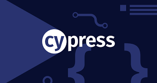
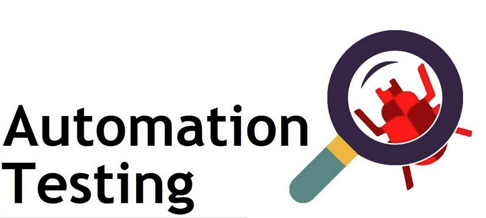
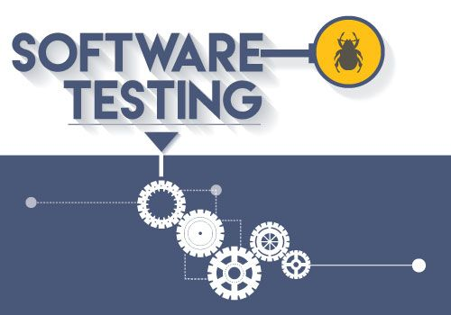
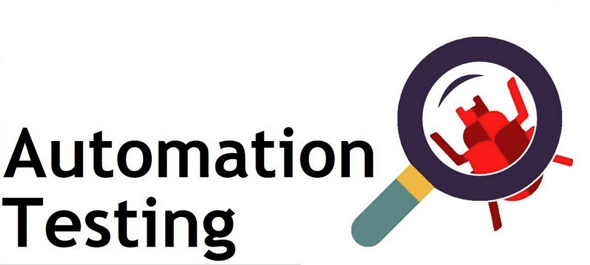
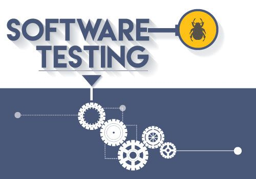
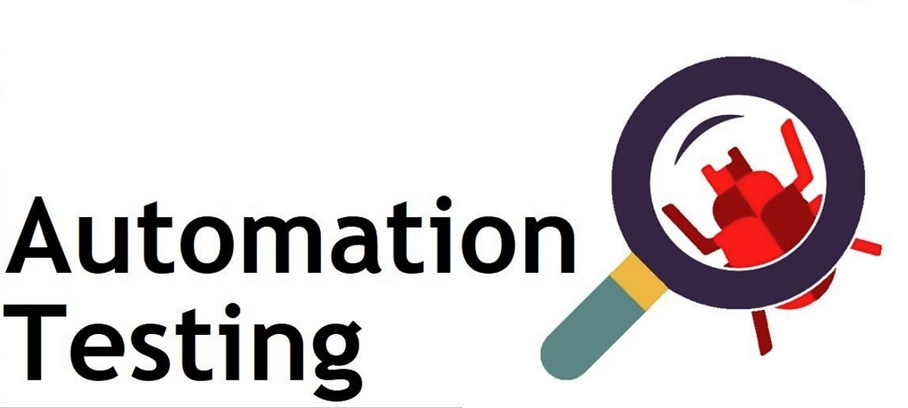
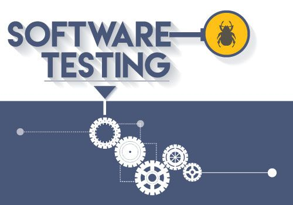
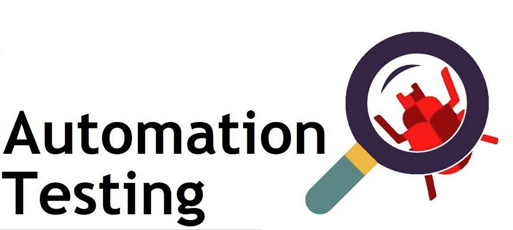
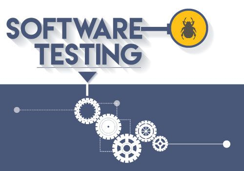

 






About myself and what I do..
Experienced software QA professional skilled in manual and automated testing. Proficient with TFS Azure, Cypress, Playwright, Putty, SQL, and Postman. Strong communicator and team player. Also an Appian developer with expertise in low-code solutions and process automation. Knowledgeable in HTML, CSS, ReactJS, NodeJS, and Javascript

